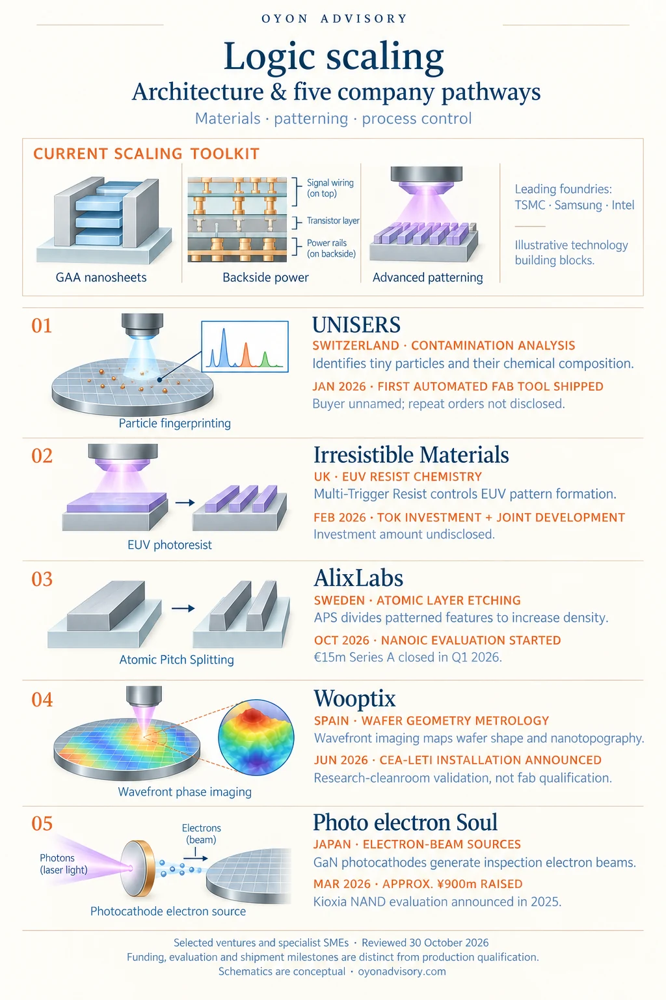

Back to Research & Perspectives
Logic Scaling: Architecture & Five Company Pathways
More powerful computing depends on making transistors smaller, more efficient and economical to manufacture. As silicon devices become increasingly three-dimensional, opportunities emerge in the materials, patterning processes and measurement tools that make this scaling possible.
The current technology landscape
Three developments shape today’s leading-edge logic manufacturing:
- Gate-all-around (GAA) transistors: gates surround thin semiconductor channels, improving electrical control as dimensions shrink.
- Backside power delivery: power connections move beneath the transistor layer, freeing frontside wiring for signals and reducing power-delivery losses.
- Advanced EUV patterning: increasingly fine features require tighter control of exposure, resist chemistry and defects. High-NA EUV has entered production on selected Intel layers; adoption varies across manufacturers. [1][2][3]
Further developments—including vertically stacked complementary transistors, or CFETs, and atomically thin semiconductor channels—remain at earlier stages of integration. [4][5]
The five companies below address specific manufacturing challenges within this landscape.


Five company pathways
1. UNISERS | Switzerland — Identifying contamination
UNISERS develops tools that detect tiny particles and identify their chemical composition. Understanding what a contaminant contains helps manufacturers trace its source and correct the process.
In January 2026, the company reported the sale and shipment of its first fully automated, production-ready fab tool to an unnamed leading-edge semiconductor manufacturer. This provides a commercial deployment signal, although repeat orders and quantified customer yield improvements remain undisclosed. [6]
2. Irresistible Materials | UK — EUV resist chemistry
Irresistible Materials develops Multi-Trigger Resist (MTR), a photoresist platform designed to control exposure-driven chemical reactions and improve pattern formation.
In February 2026, Japan’s Tokyo Ohka Kogyo (TOK) announced a strategic investment and joint-development partnership. The collaboration connects IM’s chemistry with TOK’s manufacturing capabilities and customer relationships. The investment amount and named production qualifications were not disclosed. [7][8]
3. AlixLabs | Sweden — Increasing pattern density through etching
AlixLabs’ Atomic Pitch Splitting (APS) uses controlled atomic-layer etching to divide pre-patterned structures, creating denser features while aiming to simplify conventional multiple-patterning processes.
The company closed a €15 million Series A in Q1 2026. In October, it began a six-month evaluation within the NanoIC pilot line coordinated by imec, assessing dimensions, roughness and defectivity. This is an integration evaluation; production qualification remains a subsequent milestone. [9][10]
4. Wooptix | Spain — Mapping wafer geometry
Wooptix uses wavefront phase imaging to measure wafer shape and nanoscale surface variations. These measurements help manufacturers understand deformation and process signatures as device structures become more complex.
Following a Series C exceeding €10 million in 2025, Wooptix announced its first Phemet installation at CEA-Leti in June 2026. Installed in May, the automated 300mm platform supports research-cleanroom validation, including advanced-packaging applications. It does not establish leading-logic production qualification. [11][12]
5. Photo electron Soul | Japan — Electron sources for inspection
Photo electron Soul develops GaN-based semiconductor photocathodes that convert light into electron beams for semiconductor inspection and metrology.
In March 2026, it raised approximately ¥900 million, bringing cumulative financing to roughly ¥4 billion. A Kioxia evaluation announced in September 2025 provides a named industrial application. That evaluation concerns NAND memory; advanced-logic adoption remains a separate opportunity to establish. [13][14]
The opportunity
These pathways show how specialist companies can contribute to continued scaling through better chemistry, denser patterning and more useful process information.
Their commercial value depends on translating technical capability into higher yield, reliable throughput and lower manufacturing cost within a customer’s production flow.
Selected public sources
- TSMC — Nanosheet transistors and backside power
- Intel — 18A, RibbonFET and PowerVia; June 16, 2026
- ASML — Selected-layer High-NA production; July 15, 2026
- imec — CFET integration and roadmap
- imec / TSMC / ASML — 300mm 2D transistor demonstration; June 15, 2026
- M Ventures / UNISERS — First automated fab-tool shipment; January 29, 2026
- Irresistible Materials — Multi-Trigger Resist platform
- TOK / Irresistible Materials — Investment and joint development; February 24, 2026
- AlixLabs — EUR15m Series A close; April 14, 2026 announcement
- AlixLabs — NanoIC evaluation; October 1, 2026
- Wooptix — Series C exceeding EUR10m; March 2025 announcement
- Wooptix — Phemet installation at CEA-Leti; June 29, 2026 announcement
- Photo electron Soul — Approximately JPY900m financing; March 31, 2026
- Photo electron Soul — Kioxia NAND evaluation; September 2, 2025